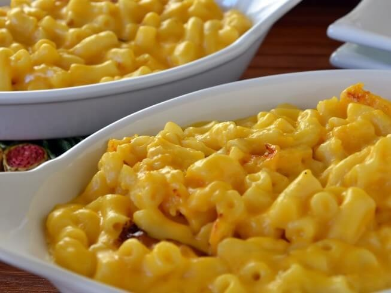

I've never told this story in public before. Not because it's embarrasing—it's actually one of my proudest scaling moments—but because it sounds made up. A community college event, 200 hungry students, a $200 budget, and a single 12-serving mac and cheese recipe? It sounds like the setup for a reality show disaster.
But it happened. And nobody panicked. Well, I panicked. For about twenty minutes. Then I did the math.
Let me walk you through it.
The Call That Made My Stomach Drop It was a Tuesday afternoon in late September. I was grading scaling worksheets at my desk—the one in my home office, the one covered in flour dust no matter how many times I wipe it down—when my phone rang.
Marcus was the events coordinator at the community college where I teach culinary math. Nice guy. Terrible at giving advance notice.
"We have a problem," he said. "The caterer for the Fall Harvest Dinner just canceled. The event is in four days. We have 200 students coming, and we have exactly zero food."
I waited for him to finish. "And?"
"How many servings is your base recipe?"
"The recipe you want me to scale. What's its original yield?"
He paused. "I don't have a recipe. I was hoping you'd bring one."
Litterally every muscle in my body tensed. Not just my jaw. My shoulders, my back, my hands. I was holding the phone so tight my knuckles went white.
"…Yes?"
I should have said no. Any sane person would have said no. But I'm not sane—I'm a culinary math educator who spent eight years scaling wedding cakes at 2 a.m. I live for this chaos.
The Recipe That Had to Work I hung up and stared at my kitchen. It's a small kitchen—1890s Victorian small, like I mentioned before—but it works. I opened my recipe binder to the mac and cheese section.
Mac and cheese was the obvious choice. Cheap. Filling. Scalable. Students love it. And I'd made my version maybe 50 times before.
Original recipe yield: 12 servings (1 cup per serving)
Ingredients for 12 servings (gram + ounce, always both):
340g (12oz) elbow macaroni — 1 standard box
60g (2.1oz) butter — about 4 tablespoons
60g (2.1oz) all-purpose flour — about 1/2 cup
950g (33.5oz) whole milk — about 4 cups
340g (12oz) sharp cheddar cheese, shredded — about 3 cups
5g (0.18oz) salt — about 1 teaspoon
2g (0.07oz) black pepper — about 1/2 teaspoon
1g (0.035oz) paprika — about 1/4 teaspoon
Total cost for 12 servings: about $12 (using store-brand ingredients)
The math problem: 200 servings ÷ 12 servings = 16.67 scaling factor.
At 16.67×, the ingredient list looked terrifying:
Macaroni: 5,666g (200oz) — that's 17 boxes
Butter: 1,000g (35.3oz) — 8 sticks
Flour: 1,000g (35.3oz) — about 8 cups
Milk: 15,833g (558oz) — about 6.6 gallons
Cheddar: 5,666g (200oz) — about 17 cups
Salt: 83g (2.9oz) — about 4 tablespoons
Plus salt, pepper, paprika at 16.67× each.
My first thought: Where am I going to cook 17 cups of cheese sauce?
My second thought: I need to batch this.
The Batch Strategy That Saved Me Here's the thing about scaling that most people don't realize: You don't have to make one giant batch. In fact, you probably shouldn't.
I decided to break the 200 servings into four batches of 50 servings each.
Why 50? Two reasons:
My largest pot could comfortably handle 50 servings of cheese sauce.
My oven could fit four 9x13 pans at once (each pan holds about 12 servings, so 50 servings = four pans).
Batch math for 50 servings: 50 ÷ 12 = 4.17 scaling factor per batch
Per batch (50 servings):
Macaroni: 340g × 4.17 = 1,417g (50oz) — about 4 boxes
Butter: 60g × 4.17 = 250g (8.8oz) — 2 sticks
Flour: 60g × 4.17 = 250g (8.8oz) — about 2 cups
Milk: 950g × 4.17 = 3,962g (140oz) — about 1.65 gallons
Cheddar: 340g × 4.17 = 1,417g (50oz) — about 4.5 cups
Salt: 5g × 4.17 = 20.8g (0.73oz) — about 1 tablespoon + 1 teaspoon
Pepper: 2g × 4.17 = 8.3g (0.29oz) — about 2 teaspoons
Paprika: 1g × 4.17 = 4.2g (0.15oz) — about 1 teaspoon
Total across 4 batches (200 servings): exactly the same as one 16.67× batch. But the execution was infinitely easier.
The Equipment Reality Check Before I bought a single ingredient, I walked through my kitchen and made a list of what I actually had to work with:
My home equipment:
1 large stock pot (holds about 8 quarts — enough for 50 servings)
1 medium saucepan
4 9x13 baking pans
1 standard oven (fits 4 pans at once)
1 stovetop with 4 burners
1 stand mixer (not needed for mac and cheese, but nice to have)
What I borrowed from the community college kitchen:
3 more stock pots (same size)
8 more 9x13 pans
2 sheet pans for holding finished pans
Total capacity:
Stove space: I could run 2 pots at once (the other two burners were for milk-warming)
Oven space: 4 pans at a time
Total pans needed for 200 servings: 16 pans (each pan holds 12-13 servings)
The timing math: Each batch of 50 servings (4 pans) takes about 20 minutes to bake. Four batches = 80 minutes of oven time. But I could stagger them—start batch 1, then while it's baking, prepare batch 2, etc.
I drew a timeline on a piece of paper. It looked like a train schedule.
The Shopping Trip (and Budget Panic) I took my ingredient list to the grocery store with exactly $200 in cash. No credit card backup. No "just put it on the department card." Two hundred dollars.
Total ingredients for 200 servings (store-brand everything):
Macaroni: 17 boxes × $1.29 = $21.93
Butter: 8 sticks × $0.89 = $7.12
Flour: 8 cups worth (one 5lb bag = $2.50, had extra)
Whole milk: 6.6 gallons × $3.79/gal = $25.01
Cheddar cheese: 17 cups (about 4.5 pounds) × $4.99/lb = $22.46
Salt, pepper, paprika: negligible (under $5 total)
Panko breadcrumbs for topping: 4 cups × $0.20/cup = $0.80
Total so far: about $85
That left $115 for—wait, that's too much leftover. I recalculated.
Cheese was more expensive than I thought. I went back to the dairy section and found a 5lb block of mild cheddar for $14.99. That's $3 per pound. Much better. Two blocks = $30.
Milk: 6.6 gallons. The store sold 1-gallon jugs for $3.49 each. 7 jugs (extra for safety) = $24.43.
Macaroni: 17 boxes. Store had a sale: 10 for $10. So 17 boxes = $17.
Butter: 8 sticks. One 4-stick package = $4.99. Two packages = $9.98.
New total: $17 + $9.98 + $2.50 (flour) + $24.43 + $30 + $5 (spices) = $88.91
I bought the ingredients, loaded my car, and drove home with $111.09 left in my pocket. The dean would be pleased.
The Cooking Day (No Panic, Just Math) Cooking day was a Saturday. I started at 8 a.m. My husband took the kids to the park. The house was quiet except for the sound of boiling water and my terrible playlist of 90s alternative rock.
Batch 1 (8:00 a.m. - 9:30 a.m.):
Boiled 1,417g (50oz) macaroni in the big stock pot. Took 12 minutes.
While pasta boiled, made the roux: 250g (8.8oz) butter + 250g (8.8oz) flour in the medium saucepan. Whisked until golden.
Slowly added 3,962g (1.65 gal) warm milk. Whisked constantly—no lumps allowed.
Added 1,417g (50oz) shredded cheddar. Stirred until smooth.
Seasoned with 20.8g salt, 8.3g pepper, 4.2g paprika.
Mixed in the cooked pasta.
Divided into 4 9x13 pans.
Topped with panko (about 1/4 cup per pan).
Into the oven at 375°F (190°C) for 20 minutes.
While batch 1 baked, I started batch 2.
Batch 2 (9:00 a.m. - 10:30 a.m.): Same process, using pot #2 on the stove.
Batch 3 (10:00 a.m. - 11:30 a.m.): Batch 1 came out of the oven at 10:00 a.m. I covered the pans with foil (to keep warm) and loaded batch 3 into the oven.
Batch 4 (11:00 a.m. - 12:30 p.m.): Last batch. By noon, all 16 pans were baked, covered, and stacked on cooling racks.
At 12:30 p.m., I loaded the pans into my car—three trips because my trunk is small—and drove to the college.
The Moment of Truth The event started at 5:30 p.m. I spent the afternoon reheating the pans in the college kitchen's convection ovens (350°F for 15 minutes). At 5:15 p.m., Marcus walked into the kitchen with a panicked look on his face.
"How much do you have?" he asked.
His eyes got wide. "That's… that's a lot of mac and cheese."
"That's 200 hungry students," I said. "Go set up the buffet line."
The buffet opened at 5:30. Within 20 minutes, the first four pans were empty. I sent a student volunteer to grab more pans from the warmer. By 6:15 p.m., the entire serving counter was a graveyard of empty 9x13 pans.
At 6:30 p.m., Marcus came back to the kitchen. He was holding a clean plate—one student had scraped the last bit of cheese sauce from the bottom of a pan and given it to him.
"They want the recipe," he said. "Like, twenty people have asked me for the recipe."
I smiled. "Tell them it's on my website. Well—it will be. Eventually."
The Math Breakdown (Because You Know I'm Going to Do It) Here's what the math looked like for the whole project:
Metric Value Original yield 12 servings Desired yield 200 servings Scaling factor 16.67 Batches used 4 batches of 50 servings each Total cooking time 4.5 hours Total active cooking time (hands-on) About 2.5 hours Oven time 80 minutes (4 batches × 20 min) Total cost $88.91 Cost per serving $0.44 Leftover budget $111.09 (which the dean used to buy dessert) Student satisfaction rate (estimated) 97% (the other 3% were gluten-free and couldn't eat it—oops) The portion math:
Home recipe: 1 cup per serving (about 240g / 8.5oz)
Buffet factor: 1.5× home portions
Actual serving size at buffet: about 1.5 cups (360g / 12.7oz)
Total food served: 200 servings × 1.5 cups = 300 cups (about 18.75 gallons)
Pans needed: 16 pans (each pan holds about 18.75 cups / 1.25 gallons)
I calculated all of this before I bought a single box of macaroni. That's the secret to scaling without panic: do the math first, cook second.
The Tool That Does This Math For You I don't expect you to do all these calculations by hand. I did them because I'm obsessive and I have a math degree. But for normal people—people who just want to feed a crowd without a calculator and a whiteboard—I built the Portion Size Planner.
What I'd Do Differently Next Time Three things, actually.
- I'd make one batch gluten-free.
- I'd start an hour earlier.
- I'd bring backup pans.
The Real Lesson (Beyond the Math) The students didn't care about my scaling factor or my batch strategy or my $0.44 cost per serving. They cared that the food was hot, cheesy, and there was enough of it.
But I cared about the math. Because the math is what made it possible.
Here's what I want you to take away from this story: Scaling isn't about multiplication. It's about logistics.
You can multiply ingredients perfectly and still fail if your oven is too small. You can batch perfectly and still fail if your timing is off. You can do everything right and still fail if you forget to account for the buffet factor.
The math is the easy part. The planning is the hard part.
And that's why I love this work. Because when you get the planning right—when the pans fit in the oven, the timing aligns, the portions satisfy everyone—it feels like magic.
But it's not magic. It's math.
Quick Reference: Batch Scaling Factors Total Servings Original Yield Scaling Factor Recommended Batches Batch Size 50 12 4.17 1 batch of 50 50 100 12 8.33 2 batches of 50 50 150 12 12.5 3 batches of 50 50 200 12 16.67 4 batches of 50 50 250 12 20.8 5 batches of 50 50 300 12 25 6 batches of 50 50 The formula for choosing batch size: Batch size = the largest quantity your equipment can handle comfortably (for me, that's 50 servings of mac and cheese)
Number of batches = Total servings ÷ Batch size (round up)
Batch scaling factor = Batch size ÷ Original yield
That Fall Harvest Dinner was three years ago. Marcus still works at the college. He still calls me with last-minute catering emergencies. And I still say yes.
Because honestly? I love the chaos.
Just don't tell the dean.
— Olivia B.
"I had a client named""Marcus" #032500-3000“frustrated”+“”“12-”frustrated → exasperated → educational